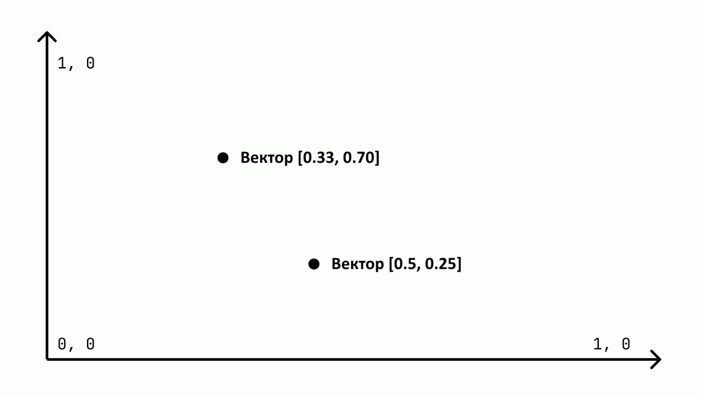
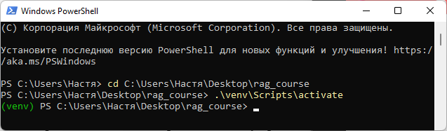
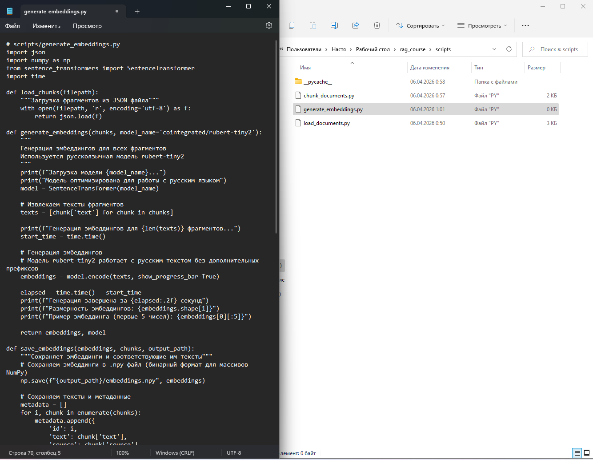
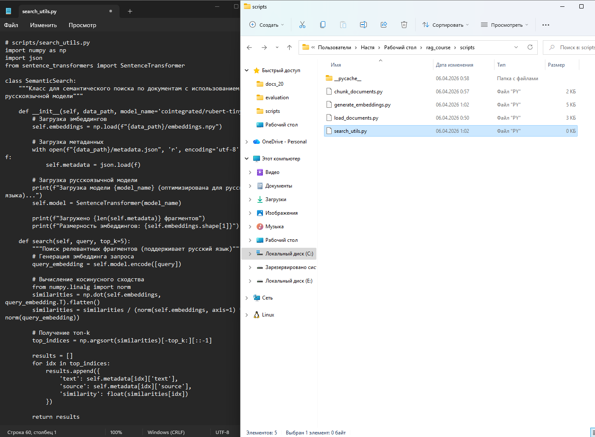
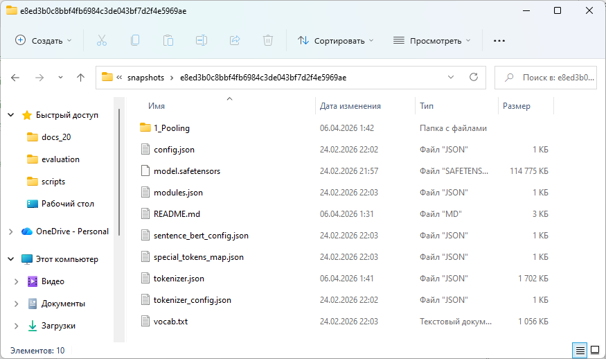
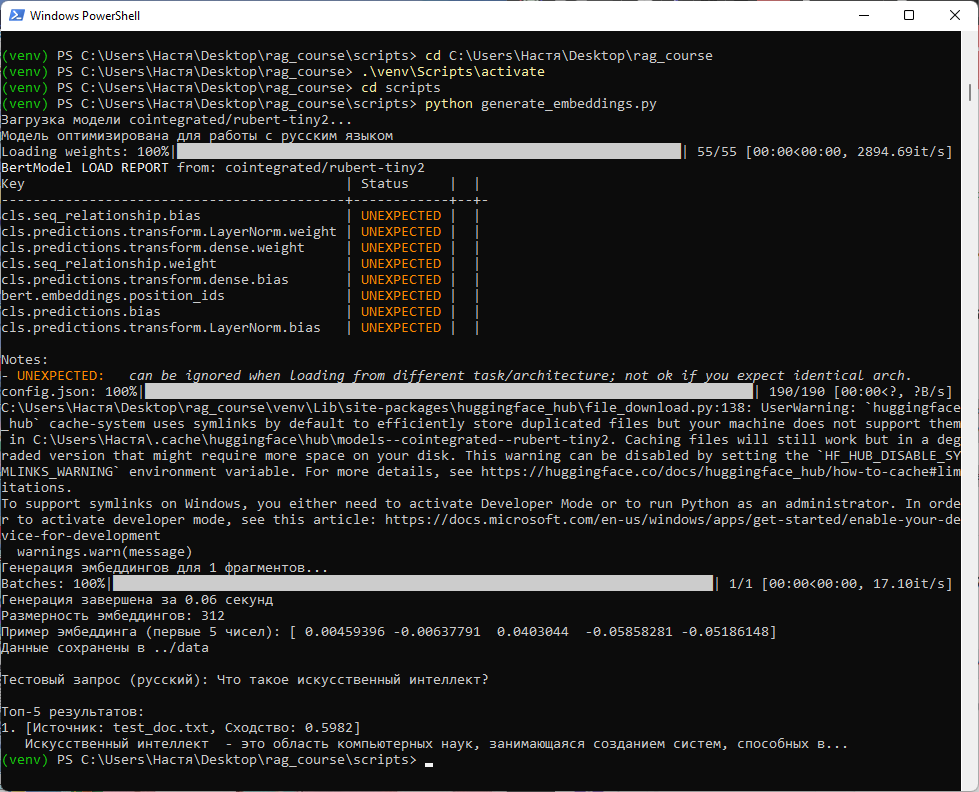

Методическое пособие №2. Генерация эмбеддингов
Цель занятия
Научиться создавать эмбеддинги для текстовых фрагментов с помощью модели sentence-transformers и сохранять их для последующего использования
Продолжительность: 4 академических часа
Пошаговая инструкция
Теоретическое введение
Эмбеддинги - это числовые векторы, которые представляют смысл текста в многомерном пространстве.

Для работы с русскоязычным текстом мы будем использовать модель cointegrated/rubert-tiny2. Эта модель:
- Специально обучена на русскоязычных текстах
- Имеет небольшой размер (~30 МБ) - подходит для любого компьютера
- Доступна для скачивания в России
- Создаёт векторы размерностью 312 (хороший баланс скорости и качества)
Откройте PowerShell и перейдите в папку проекта:
cd C:\Users\%USERNAME%\Desktop\rag_course
.\venv\Scripts\activate
pip install sentence-transformers torch transformers
Создайте файл scripts/generate_embeddings.py. Импортируйте необходимые библиотеки для генерации эмбеддингов:
import json
import numpy as np
from sentence_transformers import SentenceTransformer
import timeИмпортирует модули для работы с JSON, числовыми массивами (NumPy), генерацией эмбеддингов (sentence_transformers) и замерами времени выполнения.
def load_chunks(filepath):
"""Загрузка фрагментов из JSON файла"""
with open(filepath, 'r', encoding='utf-8') as f:
return json.load(f)Открывает JSON файл по указанному пути и возвращает загруженные данные (список фрагментов).
def generate_embeddings(chunks, model_name='cointegrated/rubert-tiny2'):
"""
Генерация эмбеддингов для всех фрагментов
Используется русскоязычная модель rubert-tiny2
"""
print(f"Загрузка модели {model_name}...")
print("Модель оптимизирована для работы с русским языком")
model = SentenceTransformer(model_name)
# Извлекаем тексты фрагментов
texts = [chunk['text'] for chunk in chunks]
print(f"Генерация эмбеддингов для {len(texts)} фрагментов...")
start_time = time.time()
# Генерация эмбеддингов
embeddings = model.encode(texts, show_progress_bar=True)
elapsed = time.time() - start_time
print(f"Генерация завершена за {elapsed:.2f} секунд")
print(f"Размерность эмбеддингов: {embeddings.shape[1]}")
print(f"Пример эмбеддинга (первые 5 чисел): {embeddings[0][:5]}")
return embeddings, modelЗагружает предобученную русскоязычную модель rubert-tiny2, извлекает тексты из фрагментов, генерирует векторные представления (эмбеддинги) для каждого фрагмента, выводит статистику (время выполнения, размерность эмбеддингов, пример значений) и возвращает эмбеддинги вместе с моделью.
def save_embeddings(embeddings, chunks, output_path):
"""Сохраняет эмбеддинги и соответствующие им тексты"""
# Сохраняем эмбеддинги в .npy файл (бинарный формат для массивов NumPy)
np.save(f"{output_path}/embeddings.npy", embeddings)
# Сохраняем тексты и метаданные
metadata = []
for i, chunk in enumerate(chunks):
metadata.append({
'id': i,
'text': chunk['text'],
'source': chunk['source'],
'chunk_id': chunk['chunk_id']
})
with open(f"{output_path}/metadata.json", 'w', encoding='utf-8') as f:
json.dump(metadata, f, ensure_ascii=False, indent=2)
print(f"Данные сохранены в {output_path}")Сохраняет эмбеддинги в бинарный .npy файл, создаёт метаданные (id, текст, источник, идентификатор фрагмента) для каждого эмбеддинга и сохраняет их в JSON файл.
def search_by_text(query, model, embeddings, chunks, top_k=5):
"""Поиск наиболее релевантных фрагментов по текстовому запросу"""
# Генерируем эмбеддинг запроса
query_embedding = model.encode([query])
# Вычисляем косинусное сходство
from numpy.linalg import norm
similarities = np.dot(embeddings, query_embedding.T).flatten()
similarities = similarities / (norm(embeddings, axis=1) * norm(query_embedding))
# Получаем топ-k индексов
top_indices = np.argsort(similarities)[-top_k:][::-1]
results = []
for idx in top_indices:
results.append({
'text': chunks[idx]['text'],
'source': chunks[idx]['source'],
'similarity': float(similarities[idx])
})
return resultsГенерирует эмбеддинг для текстового запроса, вычисляет косинусное сходство между эмбеддингом запроса и всеми эмбеддингами фрагментов, сортирует результаты по убыванию сходства и возвращает топ-k наиболее релевантных фрагментов с их текстом, источником и значением сходства.
if __name__ == "__main__":Проверяет, запущен ли скрипт напрямую, а не импортирован как модуль.
chunks = load_chunks("../data/chunks.json")Загружает ранее сохранённые фрагменты из файла chunks.json в папке data.
embeddings, model = generate_embeddings(chunks)Вызывает функцию генерации эмбеддингов для всех загруженных фрагментов, используя русскоязычную модель.
save_embeddings(embeddings, chunks, "../data")Сохраняет сгенерированные эмбеддинги и метаданные в папку data.
test_query = "Что такое искусственный интеллект?"
print(f"\nТестовый запрос (русский): {test_query}")Определяет тестовый поисковый запрос на русском языке и выводит его на экран.
results = search_by_text(test_query, model, embeddings, chunks)Вызывает функцию поиска для нахождения наиболее релевантных фрагментов по тестовому запросу.
print("\nТоп-5 результатов:")
for i, r in enumerate(results):
print(f"{i+1}. [Источник: {r['source']}, Сходство: {r['similarity']:.4f}]")
print(f" {r['text'][:100]}...")Выводит топ-5 результатов поиска с указанием источника файла, числового значения сходства и первых 100 символов найденного текста.

Создайте файл scripts/search_utils.py. Импортируйте необходимые библиотеки для семантического поиска:
import numpy as np
import json
from sentence_transformers import SentenceTransformerИмпортирует модули для работы с числовыми массивами (NumPy), JSON и генерацией эмбеддингов (sentence_transformers).
class SemanticSearch:
"""Класс для семантического поиска по документам с использованием русскоязычной модели"""Создаёт класс для организации семантического поиска по ранее обработанным документам.
def __init__(self, data_path, model_name='cointegrated/rubert-tiny2'):
# Загрузка эмбеддингов
self.embeddings = np.load(f"{data_path}/embeddings.npy")
# Загрузка метаданных
with open(f"{data_path}/metadata.json", 'r', encoding='utf-8') as f:
self.metadata = json.load(f)
# Загрузка русскоязычной модели
print(f"Загрузка модели {model_name} (оптимизирована для русского языка)...")
self.model = SentenceTransformer(model_name)
print(f"Загружено {len(self.metadata)} фрагментов")
print(f"Размерность эмбеддингов: {self.embeddings.shape[1]}")Загружает предварительно сохранённые эмбеддинги из .npy файла, загружает метаданные (тексты и источники) из JSON файла, инициализирует русскоязычную модель для генерации эмбеддингов запросов, выводит информацию о количестве фрагментов и размерности эмбеддингов.
def search(self, query, top_k=5):
"""Поиск релевантных фрагментов (поддерживает русский язык)"""
# Генерация эмбеддинга запроса
query_embedding = self.model.encode([query])
# Вычисление косинусного сходства
from numpy.linalg import norm
similarities = np.dot(self.embeddings, query_embedding.T).flatten()
similarities = similarities / (norm(self.embeddings, axis=1) * norm(query_embedding))
# Получение топ-k
top_indices = np.argsort(similarities)[-top_k:][::-1]
results = []
for idx in top_indices:
results.append({
'text': self.metadata[idx]['text'],
'source': self.metadata[idx]['source'],
'similarity': float(similarities[idx])
})
return resultsГенерирует эмбеддинг для текстового запроса, вычисляет косинусное сходство между эмбеддингом запроса и всеми загруженными эмбеддингами фрагментов, нормализует значения, находит top_k наиболее похожих фрагментов, формирует список результатов с текстом, источником и значением сходства, возвращает результаты.
def search_and_display(self, query, top_k=3):
"""Поиск с выводом результатов"""
results = self.search(query, top_k)
print(f"\nЗапрос: {query}")
print("-" * 50)
for i, r in enumerate(results):
print(f"{i+1}. [Источник: {r['source']}, Сходство: {r['similarity']:.4f}]")
print(f" {r['text'][:200]}...")
print()
return resultsВызывает метод search для получения результатов, выводит запрос и разделитель, для каждого результата печатает порядковый номер, источник файла, значение сходства и первые 200 символов текста, добавляет пустую строку между результатами, возвращает результаты.

cd scripts
python generate_embeddings.py
python -c "from search_utils import SemanticSearch; s = SemanticSearch('../data'); s.search_and_display('Что такое нейронные сети?')"
Часть 1. Откройте браузер и скачайте файлы модели по этим ссылкам:
- model.safetensors
- config.json
- tokenizer.json
- tokenizer_config.json
- vocab.txt
- special_tokens_map.json
Часть 2. Создайте папки и переместите файлы. Скопируйте и вставьте эту команду в PowerShell целиком:
$hash = "e8ed3b0c8bbf4fb6984c3de043bf7d2f4e5969ae"
Remove-Item -Recurse -Force "$env:USERPROFILE\.cache\huggingface\hub\models--cointegrated--rubert-tiny2" -ErrorAction SilentlyContinue
New-Item -ItemType Directory -Force -Path "$env:USERPROFILE\.cache\huggingface\hub\models--cointegrated--rubert-tiny2\snapshots\$hash"
New-Item -ItemType Directory -Force -Path "$env:USERPROFILE\.cache\huggingface\hub\models--cointegrated--rubert-tiny2\refs"
Set-Content -Path "$env:USERPROFILE\.cache\huggingface\hub\models--cointegrated--rubert-tiny2\refs\main" -Value $hash
Write-Host "Папки созданы. Теперь переместите скачанные файлы в:"
Write-Host "$env:USERPROFILE\.cache\huggingface\hub\models--cointegrated--rubert-tiny2\snapshots\$hash"После выполнения команды переместите все скачанные файлы в указанную папку.
Часть 3. Запустите генерацию эмбеддингов
cd C:\Users\%USERNAME%\Desktop\rag_course
.\venv\Scripts\activate
cd scripts
python generate_embeddings.pyЗадание для самостоятельного выполнения
- Попробуйте другую модель эмбеддингов (например, all-mpnet-base-v2). Сравните качество поиска и время генерации.
- Добавьте в класс SemanticSearch метод для поиска с фильтрацией по источнику документа.
- Реализуйте сохранение результатов поиска в текстовый файл для последующего анализа.
- Напишите функцию, которая принимает список запросов и выводит среднюю точность поиска (для этого нужно вручную разметить релевантные документы).
Контрольные вопросы
- Что такое эмбеддинги и зачем они нужны в RAG?
- Как вычисляется косинусное сходство между векторами?
- Почему для русского текста выбрана модель cointegrated/rubert-tiny2?
- Какой размерностью обладают эмбеддинги этой модели?
- Чем отличается работа с e5-small-en-ru от rubert-tiny2?
Критерии оценки
| Критерий | Баллы |
|---|---|
| Успешная генерация эмбеддингов для всех фрагментов | 2 |
| Сохранение эмбеддингов и метаданных | 2 |
| Реализация функции поиска | 2 |
| Тестирование поиска на разных запросах | 2 |
| Выполнено дополнительное задание | 2 |
Максимальный балл: 10